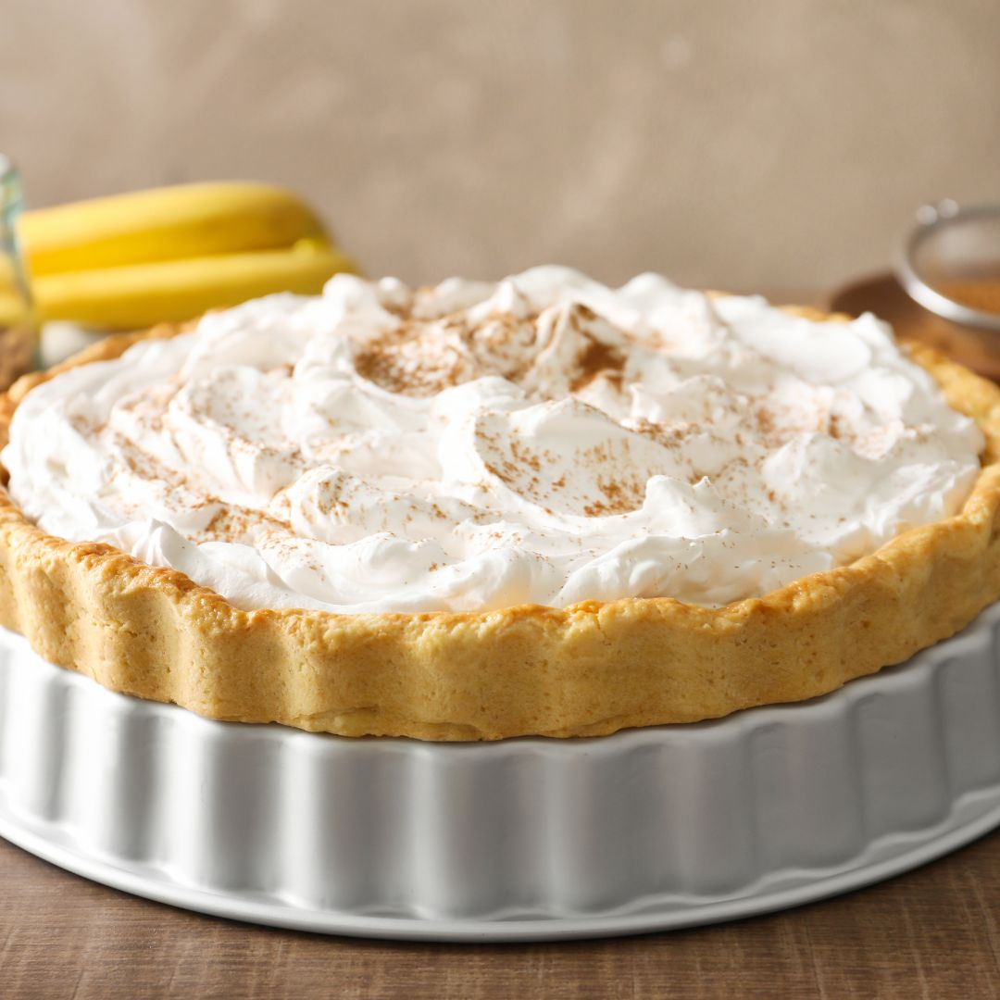

Banana Cream Pie

Bananas, but in a pie
This is how you make a banana cream pie.
Ingredients
- Sugar
- Flour
- Milk
- Salt
- Egg Yolks
- Pie Shell
- Butter
- Vanilla
- Bananas
Steps
- Combine the dry ingredients in a saucepan, then stir in the milk.
- Bring to a boil and cook until thick.
- Whisk some of the milk mixture into the yolks, then whisk the egg mixture into the saucepan.
- Cook for two more minutes, then remove from heat and stir in the butter and vanilla.
- Place the banana slices in the pie shell, then pour the milk mixture over the bananas.
- Bake the pie until the filling is set. Chill before serving.